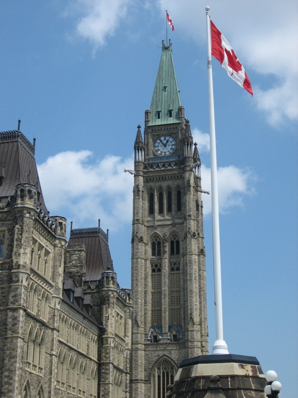

Welcome to Canada, a vast and varied land. Canada occupies most of northern North America, extending from the Atlantic Ocean in the east to the Pacific Ocean in the west, and north into the Arctic Ocean.
Canada is the second largest country in the world. Canada contains high jagged mountains in the west, relatively flat grass lands through much of the prairie region, low rolling glaciated mountains through the central and eastern parts of the country, and fertile lowlands in Southern Ontario and Quebec.
The Canadian climate varies widely, from temperate in southern and coastal areas to subarctic and arctic in the north. Winter temperatures in many regions can reach -35°C, —or colder—while summer temperatures in some areas can exceed 30°C.
Approximately 90% of Canada’s population is concentrated within 250 km of the border with the United States. About 80% of Canada’s population lives in urban areas, the rest live in small towns, villages and rural or remote areas.